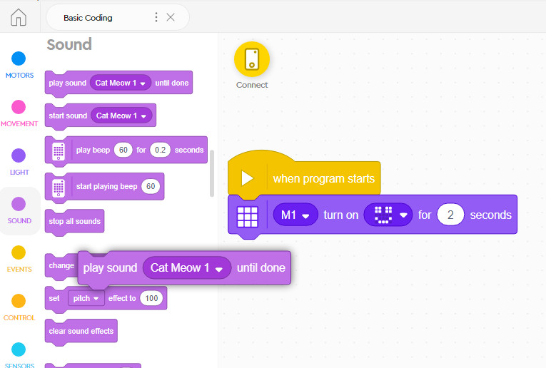
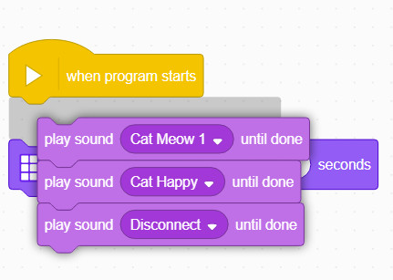
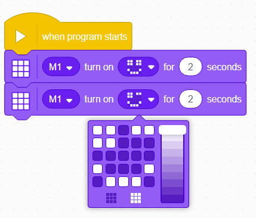
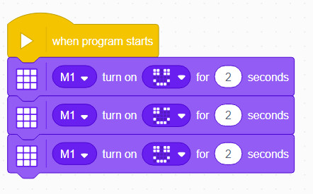
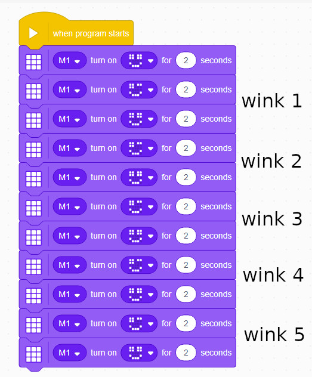
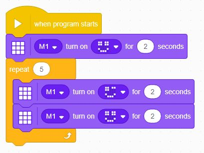
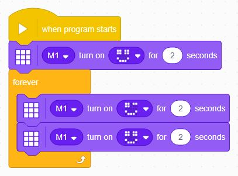

Loops
Now that you've played a bit with statments and sequences, we can introduce another fundamental coding concept - the loop.
Loops are used to execute a patten of statements more than once, without having to reprogram the sequences.
Let's look at an example.
Delete & Reorder Statements
Before we go much further we wanted to say a word about deleting and reordering coding statements in these World Blocks projects.
If you need to delete any blocks, you can just drag them back to the blocks tabs.

If you want to reorder blocks, just note that whenever you grab a statement you are grabbing it and everything attached below it...

It takes some getting used to, but you will soon get the hang of it!
The Wink
Let's try to make our Hub give us a wink.
A wink means you close one eye and then open it back up.
If we start with a smiley face, we can add another block to close the right eye.

Then we will add another block to re-open that eye:

HINT: If you think the winks are too slow you can reduce the time for each image.
But, what if I want to write a program that will wink 5 times?
When one first starts coding, the inclination is always to copy and paste the sequences:

But we can simplify (rationalize, in software engineering terminology) this code to repeat the wink pattern.
Repeat
You will find various Loop blocks under the Control blocks tab.
The most common Loop block to use is the Repeat [] block.
Any sequences you add inside the Repeat block will be executed in sequence the amount of times you indicate, for instance:

If you wish for the animation to last forever, you can replace the Repeat block with a Forever block:

Challenge
Can you try and come up with another type of animation that you can loop over and over again?
Some ideas:
- A beating heart (big, small, big, small)
- A dot bouncing along the screen
- A rocket shooting up
- A square pattern building up from one corner...